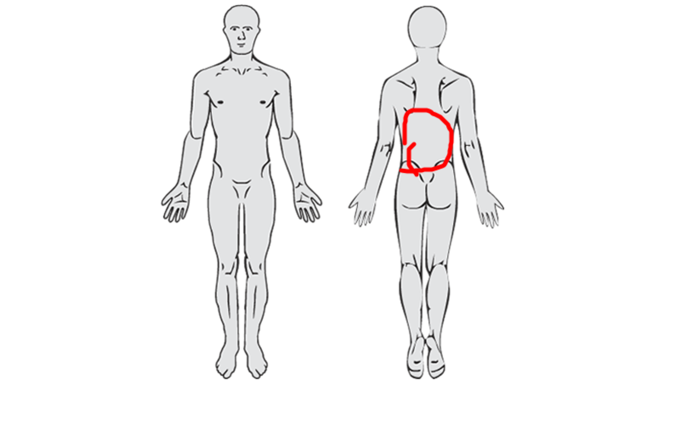

This function facilitates users' access to example files such as e.g. background images, stored in the inst/extdata folder of the package.
Value
An absolute file path to the specified file. In case no file is specified, a vector of file names from the folder, is returned.
Details
This function does not take a pdr_list or pdr_tibble as input,
nor return one as output (see pdr_match()).
Examples
# Get a vector of files in the _example files_ folder
pdr_example_file()
#> [1] "9_draw_zealand.json" "bg_feet.png"
#> [3] "bg_full_body.png" "bg_head.png"
#> [5] "bg_lower_arm_dorsal.png" "bg_lower_arm_palmar.png"
#> [7] "bg_spiral.png" "bg_spiral_grey.png"
#> [9] "bg_square_paper.png" "bg_zealand.png"
# Get the absolute path to a file in the _example files_
# folder
pdr_example_data[1, ] |>
pdr_plot_xy(background_image = pdr_example_file("bg_full_body.png"))
